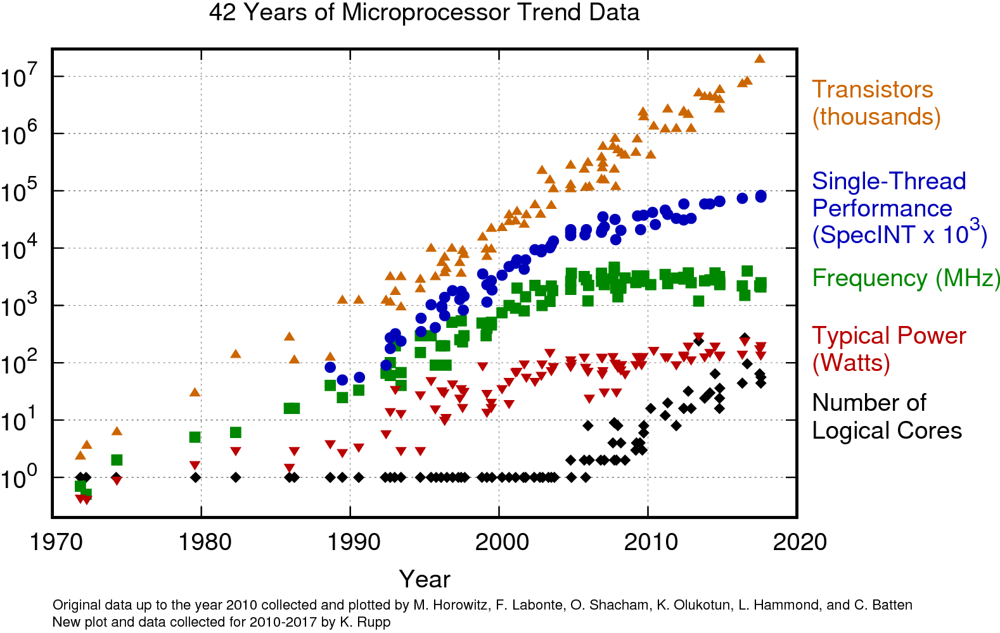

На просторах Интернета был найден следующий график:

О чем говорят данные этого графика? Можно ли их экстраполировать на 2021 год (ответ: да, можно, так как все исторические данные графика хорошо укладываются в стандартные статичтические зависимости). Итак, какие тренды видны в данном исследовании:
1. Размеры кристаллов микропроцессоров растут линейно по времени. Замедления не наблюдается, и во многом это заслуга постоянной гонки за нанометрами. Микропроцессоры усложняются, но площадь кристалла и тепловыделение не растут, потому что происходит постоянный переход на более тонкие технологические нормы.
2. Скорость роста вычислений на одно ядро замедлилась. Все идеи по ускорению вычислений на CISC/RISC архитектурах уже давно реализованы, и сложно придумать что-то новое, что позволило бы увеличить производительность ядер.
3. Рост частоты ядра микропроцессора практически остановился. 4-5GHz - это рекордные показатели, и выше этих частот добиться стабильной работы ядер невозможно (только переход на асинхронные вычислительные схемы, но они в современной микроэлектронике являются экзотикой).
4. Рассеиваемая мощность (теплопакет) практически не растет. 100-200 Ватт - это максимум тепловой энергии, которые выделяют современные микропроцессоры. Делать более горчие камни производители не решаются, так как будет страдать надежность и процессора и материнской платы.
5. Повышение количества логических ядер находится в начальной части тренда. Цифры этой линии зависят не от количесва гиперпотоков на ядро (которое в массовом сегменте не превышает двух), а зависит просто от количества ядер. Как минимум, серверное железо и железо производительных рабочих станций ориентируется на 16-32 физических ядра, и многоядерность хорошо поддается масштабируемости.
|
Знаете ли вы, что: Процессоры на Zen 3 – последние из AM4 В ноябре 2020 года компания AMD представила новую линейку процессоров на обновлённой микроархитектуре Zen 3. На ней построены все процессоры AMD Ryzen 5000-й серии, которые должны стать финальным пополнением CPU под сокет AM4. На ближайшие годы сборки на Райзенах 5000-й серии будут оптимальным решением, даже после релиза 6000-й серии. Причина в том, что следующие CPU АМД разрабатывают уже под AM5 платформу, и работать они будут в связке с оперативной памятью нового поколения DDR5. Цена процессоров 6000-й серии предполагаемо окажется крайне высокой по двум причинам:
|